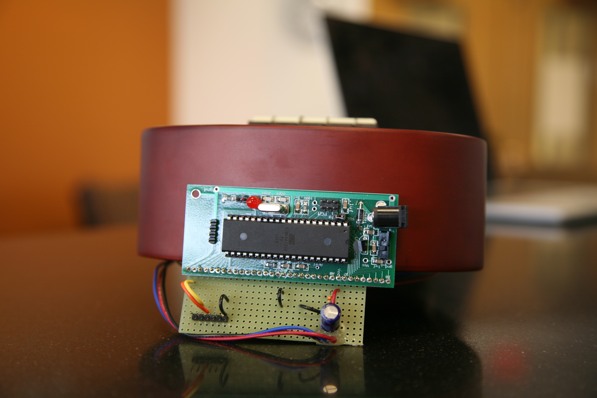

Figure 1: Obligatory Glamor Shot
"A modified ukulele that uses lights to teach you how to play chords and songs."
project soundbyte
ukule-LED is a ukulele with LEDs embedded in its fretboard. These LEDs can light up in configurations corresponding to different chords, which can aid the ukulele player in learning how to play certain chords, or can act as a chord reference for a more advanced player. ukule-LED has two modes of operations. First, in "play" mode, the user can feed the system a song file, a text file that contains the tempo, time signature, and an ordered listing of the chords in a song. The ukulele will light up the correct chords at the correct times in the song. In "practice" mode, the user can specify a single chord, which is lit up indefinitely.
ukule-LED is made up of two major components. First is the ukulele itself. We use sixteen RGB LEDs, embedded in the fretboard before the first four frets on each string. These LEDs are wired to the microcontroller, which is mounted on the ukulele itself. The ukulele is wired to a PC, which runs a companion program with a command line interface. From this interface, the user can put the device in "play" mode and specify a path to a song file, or put the device in "practice" mode and specify a chord name.
High Level Design top

Figure 2: High Level Project Structure
Inspiration and Rationale
Our inspiration for this project comes from a variety of sources. Our idea to upgrade a musical instrument using LEDs comes from various Hackaday articles, including this one. We considered using LEDs to augment a couple of other instruments, including a keyboard and a guitar, before settling on a ukulele. We were also inspired by the popular Guitar Hero video game series.
We believe that musical education is an essential part of the human experience, and we were looking at ways in which the experience of learning to play an instrument could be improved. One thing we noticed is that a difficult part of the learning process for beginners is to memorize all of the different finger positions corresponding to the various chords of their respective instruments.
Our project is an attempt to make this learning process as easy as possible. We chose to build this project on the ukulele because it is a comparatively small and simple instrument, but in practice our project concept can be extended to many other instruments such as violin, guitar, piano, etc. By using lights to indicate which strings need to be held down for different chords, users can learn the ukulele much more easily, without having to constantly reference and search through chord reference sheets or trying to memorize all of them at once.
Math
Our project required precise real-time timing to make sure the right chords were displayed on the LEDs according to the tempo specified by the user. The main math involved was in setting the ISR to fire at the correct intervals to transition between chords in a song based on the tempo in beats per minute provided in the song file.
We used the timer 3 ISR to do the timming for the song. We set the prescalar to 256, which means that the clock ticks once every 256/16000000 seconds. Thus, we have 256/16000000 = 62500 ticks per second. The user provides the tempo in beats per minute (bpm), so to convert this into a value OCR3A we calculated: (1 min/tempo beats) * (60 sec/min) * (62500 ticks/sec) and then subtracted 1 from this value because according to the datasheet the microcontroller uses TOP+1 as its top trigger value for the clock ISR.
Thus we obtain our formula: period = (62500 * 60) / tempo - 1. So whenever the user specifies a tempo, we apply this formula and set OCR3A to the result.
Logical Structure
On a high level, the user will input a command using our command line interface running on their desktop or laptop computer, which we wrote using Python. The user can specify a single chord to play, or a song file to play according to some tempo. The Python end then parses the command and song file, and sends it over serial communication to the microcontroller using a data serialization encoding what we developed.
On the MCU side of things, we run two real-time tasks using TRT. One of them listens on STDIN for the user to input a new command on the CLI. When a command does arrive, it proceeds to determine which of the two modes was specified by the user, practice mode or play mode. In practice mode, the LEDs for a single chord are held on indefinitely, until the user specifies a different chord in practice mode or switches to play mode. In play mode, the microcontroller plays the song from a song file by lighting the LEDs corresponding to the song chords sequentially according to the chord duration provided in the song file. Depending on which mode is expected, this task will deserialize the rest of the data accordingly. In particular the command is for play mode then the task parses and interprets the serialized version of the song, stores it into local memory, and sets up the ISR according to the required tempo.
After the aforementioned task parses the serialized input and sets everything up, the ISR will fire periodically and every time it will increment a pointer into a song array which indicates which cord is the one that should currently be played. Another real-time task constantly polls this pointer value and drives the LEDs according to the pattern corresponding to the current chord.
Hardware Tradeoffs
The main hardware tradeoff was deciding whether to drive all of the lights in series or in parallel (for example four LEDs per port). The benefits to putting the LEDs in parallel would have been that there would be more voltage available to power each LED, and that a broken connection early in the line would not cause the failure of all subsequent LEDs.
We decided to use the series method for a few different reasons. First, it maximizes simplicity of our code and compatibility with driver, which assumes all LEDs connected in serial connected to a single port. Next, we found that one port offered sufficient power to drive all sixteen LEDs in series without any noticible drop in brightness. Finally, we decided that our soldering job seemed pretty stable and that connecting the lights in parallel to multiple ports would introduce too many new wires and disrupt the aesthetics and user experience for the project.
Software Tradeoffs
In terms of software, a big problem we ran into initially was driving the lights. The lights are driven by a very precisely timed pwm wave. We at first attempted to generate this pwm signal ourselves using the same technique as in lab 2, but we soon realized that the timing specifications were too precise and our MCU could not meet them. Following the specifications of WS2812 Datasheet linked in the References section, the various overflow thresholds would need to be changed every few hundred nanoseconds or so, which would almost surely been impossible to do from a standalone C program let alone one running in conjunction with the time overheads caused by TRT and context switching. The reference article linked along with Alan Burlison's WS2811 Driver explains in detail the virtual infeasibility of this task using C code running on a 16MHz AVR.
After realizing this and doing some research, we found Burlison's WS2811 Driver, which achieves the strict specifications using very precise pulse-timing no-op delays in assembly. Utilizing this driver, we were able to successfully drive the LEDs and move onto the next phase of the project.
Software Design top

Figure 2: Program Overview (Functions in dashed boxes represent real-time tasks)
Command Line Interface
To interact with the microcontroller, our project requires a desktop or laptop running Python. On this side, our user interface is a simple command line interface. There are two command formats it can take: ukule_led practice "chord" port "portname" and ukule_led play "file" port "portname".
The first command type tells the microcontroller to go into practice mode. The arguments for this mode are "chord", which is the chord to be played (for example "A", "C#m", "Gb7", etc), and the other argument is "portname", which is the port on the computer which is connected through USB serial cable to the microcontroller.
The second command type tells the microcontroller to go into play mode. The arguments are "file" which specifies the path to the song file on the local OS, and "port" which is serves the same function as previously described.
To implement this functionality we used the python library docopt, which allows us to easily define different command types, sanity check the user's command line input, and parse the command line arguments.
Music File
If the user specifies play mode, the user specifies a file on the local file system which encodes a song according to a format we designed. Below is an example of a song file:
240 4
|A B C D|E F G -|A - - B|
|A - Bbm A7|Bm X A#7 -|A - X D|
So the first line of the song file contains two numbers. The first number (240 in the example) represents the tempo the song should be played in, in terms of beats per minute (bpm). The range we currently support is any number between 60 and 240 bpm. The next number represents the beats per measure of the song's time signature (4 in the example).
The next lines all contain measures of the song, each measure should be delimited by a | symbol and contain a number of chords equal to the number of beats per measure specified, each chord corresponds to one measure. There can be an arbitrary number of measures, broken up into however many lines the user wants. We support major, minor, and seventh chords, on the standard octave along with sharps and flats. A - signifies to hold a previous chord on for another beat, and an X means no chord should be displayed.
File Parsing and Serial Transmission
When the Python script receives a command from the user, it uses docopt to parse the command arguments and determines the command. We serialize our command and data using a string of numbers delimited by the / character. To parse the song file, the script uses the standard IO library built in for Python to read the file, and the string library to do sanity checks and extract the file contents into memory. We developed an encoding that assigns each chord a unique number starting from 1, and the script scans over the chords in the song file and converts them to the numbers based on a map we provide.
The data is then converted into a string so that it can be serialized and sent over the serial connection. An example string we might send to put the program in practice mode is "1/17", and an example string for play mode is "2/200/4/14/13/02/30/-1". The first number sent is a flag to denote practice mode (1), or play mode (2). Practice mode is simple, the only information after the "1" needed is the number for the single chord to be held on.
For play mode, after the leading "2" the second number provided is the tempo, and third is the beats per measure, which are 200 and 4 in the example respectively. The next numbers are the chords of the song in sequential order. There are indefinitely many of them, and the list is terminated by a -1. Using Pyserial, the script then opens a connection to the port provided as a command line argument by the user, and writes the serialized string to the port.
Initialization
On the MCU side of things, we start of with a main(void) function that runs once to initialize everything when the program first starts. First, it sets up the Neopixel driver by registering portA to be the port it will communicate over and setting the data direction DDRA of the port to output. Next, it sets up timer3 as the timer that drives the timed transitions between chords by setting the prescalar to 256, setting a default value to OCR3A which will be overwritten later, and enabling the timer3 interrupt.
Next, it does the setup for TRT, by initializing it, setting up standard in and out, allocating space for the idle task stack, and setting up the two standard semaphores SEM_RX_ISR_SIGNAL and SEM_STRING_DONE which allow for tasks running on TRT to receive from standard input. It then creates our two real-time tasks on TRT, after which it enables sleeping and goes into an infinite sleep loop because it will not be needed again.
Receiving From Serial Port
Our first real time task is responsible for waiting for using input to come in over serial, and parsing it when it does come in. It allocates a command buffer of size 1000 bytes (long enough to accomodate most reasonable songs) and calls gets(cmd) and then waits on the SEM_STRING_DONE semaphore, which will be signalled when TRT receives input from stdin.
When it comes out of waiting, it will have a command buffered in cmd. It then checks if the go flag does not equal 2 and proceeds if so, else it ignores the new command. The go flag indicates which mode it is currently in (0 for idle, 1 for practice, 2 for play).
Real-time LED Driving
TRT and Scheduling
Chord Lookup Table Generation
Hardware Design top
Our electronic components included an ATmega1284P microcontroller mounted on a custom PCB and 16 WS2812B RGB LEDs. These were soldered to a small solder board, along with various resistors, capacitors, jumper wires, and 6 header pins for connecting to a USB serial cable.
ATmega1284P Microcontroller
We decided to use the 1284P because we needed to use two 16-bit timers for our project. One was used by TRT, and the other was used for the timing of songs.
The 1284P was also the most convenient choice. We already had a custom PCB built, which included all of the necessary power circuits. We also avoided having to learn a new microcontroller datasheet.
WS2812B RGB LEDs
We used Adafruit's NeoPixel Mini PCBs, each of which includes a WS2812B RGB LED and the necessary capacitor, as given in the WS2812 datasheet. We decided to use the PCBs instead of directly directly using WS2812B LEDs to make soldering easier.
All of the RGB LEDs are driven from a single microcontroller I/O pin, PORTA0. As per the datasheet, they were all connected in series, with the Dout, 5V, and gnd pads of one wired to the Din, 5V, and gnd pads of the next. The Din pin of the first LED is connected to PORTA.0 on the microcontroller through a 330 ohm resistor to protect the first LED from any voltage spike, and the Dout pin of the last LED is not connected to anything. There is a 100 uF capacitor between the 5V and gnd lines, used to prevent large inrush currents from destroying the first LED.
Soldering the RGB LEDs together is the most challenging part of building the ukule-LED hardware. There should be four groups of four NeoPixel PCBs. The Din, Dout, 5V, and gnd pins of each group need to connected as described in the previous paragraph. We used very short lengths of wire, soldered to the pads on the NeoPixel PCBs, such that there was about 1-2 mm of space between each PCB. Next, these four groups need to be wired together. We used 3 approximately 4 cm lengths of wire to connect these. Finally, all 16 NeoPixel PCBs were to be hooked to the solder board with 3 approximately 50 cm lengths of wire.
Serial Connection
We used a USB serial cable to enable communication between the host PC and the microcontroller's USART. The user specifies a song file path, then the Python CLI converts this file into a string and sends it through the cable to the microcontroller.
Power
According to the power section of the Adafruit NeoPixel Überguide, each RGB LED driven at maximum brightness consumes 60 mA of current, resulting in a total current draw of 960 mA for 24 RGB LEDs. However, we drove a maximum of 4 LEDs at a time, with the macro INTENS to 20, out of a maximum value of 256. A back-of-the-envelope calculation gives approximately 18.75 mA of current, which is well below the absolute maximum DC current of 40 mA for a microcontroller pin, given in the microcontroller's datasheet. As such, we decided that we could drive the RGB LEDs using the microcontroller's VCC line, instead of resorting to an external power source as the Überguide suggested. We had no trouble with this.
We were able to use a single 9V power supply for all of our power needs. We decided against using a 9V battery because the system has to be tethered to a computer with a USB serial cable anyways, and another cable coming out of the system is not a major inconvenience at that point.
Ukulele
To prepare the ukulele for our project, we had to dremel out the fretboard up to the fourth fret in to accomodate the RGB LEDs. We also had to keep all the frets intact and keep the LEDs below the frets in order to maintain playability of the ukulele. We considered using epoxy to make the fretboard above the LEDs smooth, but we were worried that we wouldn't be able to keep the epoxy contained.
We hot glued four sets of four LED to the dremeled grooves in the fretboard. We also hot glued the microcontroller and the solder board to the end of the ukulele opposite the fretboard, as shown in Figure X. Overall, we didn't add too much mass to the ukulele.

Figure X. The microcontroller board and the solder board.
Results top
Speed and Accuracy
In play mode, the system supports songs with tempos between 60 and 240 bpm. We feel that this range is enough for the vast majority of songs. These tempos are converted to timer periods by the formula period = (62500 * 60) / tempo - 1. This means the tempo resolution around 60 bpm is about 0.001 bpm and the tempo resolution around 240 bpm is about 0.015 bpm. This exceeds our needs.
However, when the user starts a new song (in play mode) or selects a new chord (in practice mode), there is a delay. This happens because we have to first send a string to the microcontroller through the USART and then preprocess the string before the LEDs corresponding to the chords in the song can be lit up. This delay is about one second long. This isn't an issue in practice mode, and thanks to the count-in we implemented, isn't a large issue in play mode.
Testing
We tested our ukulele primaily by feeding it sample song files and ensuring that the behavior was correct. We included a variety of chords: major, minor, and seventh chords, and made sure the correct LEDs were lit up and with the correct colors. We also ensured that, when no chord was specified in the current time in the song, that no LEDs were lit. We tried different time signatures to make sure the count-in mechanism worked. We also tested practice mode by feeding the system a variety of chords. Finally, we made sure that the system did not need to be power cycled during use. We tried using the device in play mode twice in a row, practice mode twice in a row, and tried to switch modes.
Soldering together the RGB LEDs was difficult, and the connections were prone to breakage if the LEDs were jostled. In addition, all of the LEDs were in series, so breakage of one wire would disconnect all successive LEDs. We therefore had to test the connection every time we physically adjusted the LEDs. This was especially important before we glued the LEDs into their places within the ukulele fretboard.
Safety
There are not many electrical hazards in our system. We use a single 9V power supply, which is not enough voltage to harm someone. We also shielded the exposed portions of the RGB LEDs' data and power lines with a layer of hot glue. As the user's fingers come very close to the LEDs while the system is in use, we used hot glue to shield all of those wires as well. The hot glue also gave our connections some mechanical strength.
One possible hazard is the fact that there are two cables coming out of ukulele, the power supply cable and the USB serial cable. These may pose a tripping hazard, but we do not think it is a major concern, since the wires can all be disconnected when the system is not in use.
Usability
One of our goals in designing ukule-LED was to detract from the ukulele experience as little as possible. This is what makes it usuable as a ukulele tutor. We did this by first minimizing the mass of the components we used. Next, we tried to arrange the wiring so that it is unobstrusive when the user is holding the ukulele in a playing position.
We feel that our system is intuitive to use, but we found that ukulele beginners needed to start with practice mode in order figure out finger positions for chords before they could proceed to play mode
Extensibility
ukule-LED can easily be extended. Currently, the system only supports major, minor, and 7th chords, where major chords are lit up in green, minor chords in red, and 7th chords in blue. The files chord_map.py and chord_lookup_table.h determine what chords are supported and what colors individual chords light up in. More specifically, chord_map.py maps chord names to their indices, and chord_lookup_table.h maps these indices to LED patterns and colors. By editing these two files, a user can extend the system's functionality. In one possible extension, by adding to both files, a user add support for all types of chords. C#7sus4, anyone? In another possible extension, the user can use LED color to tell the user specifically where to place each finger while playing a chord. For example, a red LED would correspond to the index finger position. There are many directions this project can be taken.
Conclusions top
Standards
Intellectual Property Considerations
Ethical Considerations
In designing and building ukule-LED, we adhered to the IEEE Code of Ethics.
We made decisions to ensure the safety of ourselves and of users. We shielded all high-current wires with hot glue, checked diligently for short circuits and other electrical hazards, and made all cables detachable to minimize tripping hazards. When working with potentially dangerous lab equipment such as the soldering iron, the hot glue gun, and the Dremel, we made sure to use the tools following the proper procedures and safety precautions. In terms of safety, we always wore goggles when soldering, and wearing both goggles and respiratory mask when using the Dremel.
We were careful to avoid damage to lab equipment and to others' projects. We also complied with the rules and regulations of the lab. We kept our lab station clean after use with the next group in mind.
We honestly accepted criticism for our work, in the form of our proposal review and debugging help from the course TAs and instructor. We also thoroughly acknowledged our sources and inspirations, including the libraries and drivers that made our work much simpler. We also assisted our fellow students in the course by providing honest criticism if asked, but we stayed well within the limits outlined in the Cornell University Code of Academic Integrity.
Legal Considerations
Appendices top
A. Schematics
{kind=link}
High-Level Hardware Schematic
B. Cost Details
Part Number |
Vendor |
Quantity |
Price |
Total Cost |
ATmega1284P |
Lab stock |
1 |
$5 |
$5.00 |
Melokia UK13 13" Soprano Ukulele |
Amazon |
1 |
$23.99 |
$23.99 |
NeoPixel Mini PCB - Pack of 5 |
Adafruit |
4 |
$4.95 |
$19.80 |
Small Solder Board |
Lab stock |
1 |
$1.00 |
$1.00 |
Custom PCB |
Lab stock |
1 |
$4 |
$4.00 |
Header Pins |
Lab stock |
20 |
$0.05 |
$1.00 |
Capacitors |
Lab stock |
1 |
$0 |
$0.00 |
Resistors |
Lab stock |
1 |
$0 |
$0.00 |
12V Power Supply |
Lab stock |
1 |
$5 |
$5.00 |
USB Serial Cable |
Lab stock |
1 |
$7 |
$7.00 |
Wire |
Lab stock |
4’ |
$0 |
$0.00 |
Heat Shrink Tubing |
Lab stock |
6” |
$0 |
$0.00 |
Total cost |
$66.79 |
C. Distribution of Work
| Raghav Subramaniam | Jeff Tian |
|---|---|
| Overall Hardware Design | Overall Softare Design |
| LED and Board Soldering | Ukulele Dremeling |
| Song File Format Design | Song Parsing Python Frontend |
| C Chord Lookup Table Generation Script | Data Transmit Encoding/Decoding |
| Main C Code Implementation | Main C Code Implementation |
| Website | Website |
D. Code Listing
placeholder
References top
This section provides links to external reference documents, code, and websites used throughout the project.
Datasheets
References
Acknowledgements top
We would like to thank Professor Bruce Land for teaching us the background knowledge over the course of the semester to allow us to build this project, and for the insight he's given us during lab hours.
We would also like to thank all of the TAs who answered our questions and helped us debug. A special thanks to our lab TA Eileen Liu, who additionally provided us with regular feedback on our proposed ideas and methods over the course of the project to help us stay on track.